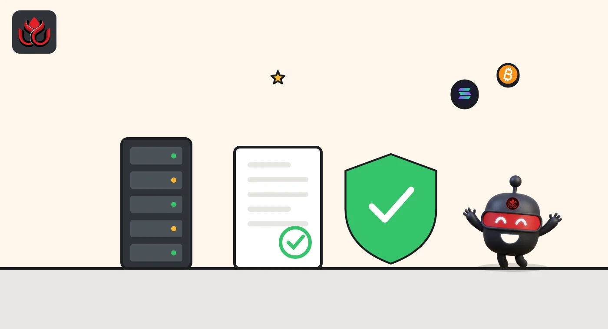
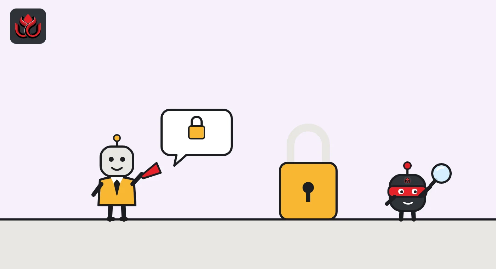

What is Base? How Coinbase's $14.7B layer 2 works and who can change it
Base is an Ethereum layer 2, an optimistic rollup built with the OP Stack, and the biggest by value: about $14.7 billion secured as of November 2, 2026, per L2BEAT. It runs transactions cheaply, posts the data to Ethereum, and a Coinbase multisig holds one of its two upgrade keys.
Key points
- Base is an optimistic rollup on Ethereum built with the OP Stack. It processes transactions on its own chain and posts the data to Ethereum.
- L2BEAT rates Base Stage 1 and showed about $14.7 billion in value secured on November 2, 2026, the most of any layer 2 it tracks.
- A single sequencer orders transactions today. Users can force transactions through Ethereum with up to a 12-hour delay.
- Withdrawals to Ethereum take 5 days with one proof, or 1 day when both a TEE proof and a ZK proof agree.
- Contracts can be upgraded instantly with sign-off from a Coinbase multisig and an 8-of-11 Security Council, so users get no exit window.
What is Base?
Base is a layer-2 network for Ethereum. A layer 2 is a separate blockchain that handles transactions more cheaply than Ethereum itself, then records the results on Ethereum so they inherit some of its security. L2BEAT, the independent layer-2 tracker, classes Base as an optimistic rollup built with the OP Stack (the open-source software from Optimism), with chain ID 8453 and ETH as its gas token.
Base is the biggest layer 2 by value. L2BEAT's front page showed about $30 billion secured across all layer 2s on November 2, 2026, with Base at about $14.7 billion, ahead of Arbitrum One at about $9.5 billion. L2BEAT notes that about a third of Base's figure relies on extra trust assumptions, such as tokens bridged by outside parties.
Coinbase sits in the controls: one of the two keys needed to upgrade Base belongs to what L2BEAT calls Coinbase's Base Coordinator Multisig. L2BEAT also records that Base left Optimism's Superchain on March 4, 2026, and now ships its own upgrades.
How does Base work?
Base's protocol overview lays out the moving parts:
- Sequencer. A single active sequencer orders user transactions into blocks. Base says it currently produces Flashblocks, small preconfirmation blocks, every 200 milliseconds, and describes the sequencer as "not a trusted actor" because its output can be checked.
- Batcher. Transaction data is compressed and posted to Ethereum as blobs or calldata. Anyone can rebuild Base's full state from what is on Ethereum.
- Execution. A Reth-based engine (Reth is an Ethereum client written in Rust) runs the transactions and offers the same JSON-RPC interface wallets use on Ethereum.
- Deposits and withdrawals. Funds enter through a contract on Ethereum called OptimismPortal. Withdrawals go the other way and must wait for a proof game to resolve.
For apps, the result is fast. Base's finality page lists about 200 milliseconds for Flashblock inclusion, about 2 seconds for a full block, about 2 minutes until the batch lands on Ethereum and about 20 minutes until that Ethereum batch is final. Base says only one Base block has ever been reorganized.

How does Base prove its state to Ethereum?
This is where Base changed most. Base switched on permissionless fault proofs in October 2024, so anyone could propose and challenge claims about its state. In 2026 it moved to a multi-proof system called Azul, which L2BEAT says activated on May 26, 2026.
Under Azul, a proposal can be backed by two kinds of proof. A TEE proof comes from software running in secure hardware (AWS Nitro Enclaves). A ZK proof is a cryptographic proof that anyone can generate. Base says the ZK path is permissionless and can override an invalid TEE-backed claim. L2BEAT adds that each proposal posts a 0.05 ETH bond and covers 600 Base blocks.
The proof choice sets withdrawal time. With one proof, the window is 5 days, cut from 7 by Base's Beryl upgrade. When both a TEE proof and a ZK proof back the same proposal, it falls to 1 day. Base says third-party bridges can pay out faster from their own funds, but the window itself does not change.
How do deposits and withdrawals work?
Moving ETH or tokens onto Base is quick. Per Base's protocol overview, a deposit into the OptimismPortal contract on Ethereum shows up on Base as a deposit transaction at the start of a Base block.
Leaving takes longer, in four steps:
- The user starts the withdrawal on Base.
- A proposer posts a summary of Base's state (an output root) to a contract on Ethereum, which opens a dispute game.
- The challenge window runs: 5 days with one proof, or 1 day with both a TEE and a ZK proof.
- The user proves and then finalizes the withdrawal on Ethereum.
Base's finality page says waiting for the state to be posted usually adds 20 to 60 minutes. Before Azul, every withdrawal took at least 7 days. The Azul spec moved a separate 3.5-day delay out of two of Base's Ethereum contracts and into its new proof verifier, which keeps the 1-day path reachable; the later Beryl upgrade cut the single-proof window to 5 days.
Activity stays high. On November 2, 2026, L2BEAT showed about 74 user operations per second over the past day and about $105.8 million moved across chains in 24,360 transfers.

Who controls Base?
L2BEAT rates Base Stage 1, "limited training wheels", on its stages scale from 0 to 2. It says Base passes the walkaway test, meaning users could still get their funds out if the operators disappeared.
Upgrades are the weak point. According to L2BEAT, Base's contracts can be upgraded instantly, with no timelock, when two parties sign: Coinbase's 3-of-6 Base Coordinator Multisig and an 8-of-11 Security Council. On its own the council's threshold is about 73%, below the 75% L2BEAT looks for in a Stage 1 council; Base counts the nested setup as 9 of 12 signers, or 75%, and L2BEAT still rates Base Stage 1. That leaves users no exit window before a change. L2BEAT lists the risk plainly: funds could be stolen if a contract received a malicious upgrade. To reach Stage 2, it says, Base would need at least 30 days for users to exit before ordinary upgrades, and a Security Council limited to fixing provable onchain bugs.
If the sequencer censors someone, users can push a transaction through Ethereum directly, with up to a 12-hour delay.
What are the risks?
- Upgrade risk. Instant upgrades by two multisigs are the main trust assumption, as described above.
- Single sequencer. One operator orders transactions. It cannot steal funds, but it can delay them or go down.
- Liveness. L2BEAT logged one gap of 23 hours and 21 minutes with no state updates posted to Ethereum, from October 8 to October 9, 2026, against a typical interval of about 47 minutes. Blocks still ran, but withdrawals depend on those updates.
- Fast change. Base ships hard forks often. Its next one, Denim, moves to 200-millisecond blocks and could break contracts that count time in blocks, as LC Insight reported.
How is Base different from other layer 2s?
Base is built with the OP Stack, like many other chains. On L2BEAT, Arbitrum One and OP Mainnet are also Stage 1. Arbitrum One relies on interactive fraud proofs that anyone with enough funds can join, while Base combines TEE and ZK proofs. Base also runs its own Reth-based node and, since leaving the Superchain, sets its own upgrade schedule. Optimism took a different path: LC Insight covered how it rewired fault proofs on four chains for interoperability.
LC Insight analysis
This section is our reading of the facts above, not a statement of fact.
- The real trust question on Base is the instant upgrade path, not the sequencer. While two multisigs can change contracts with no delay, Base's security rests on those signers.
- Azul's 1-day withdrawals are a real gain, but only when both proof types agree. How often proposals actually get the second proof is the number to watch.
- The near-term pressure point is the Denim fork. Faster blocks help traders, but contracts that count blocks to measure time are where problems would surface.
What's next
- Denim activation on mainnet and any contract issues tied to 200-millisecond blocks.
- Any move to add an exit window or timelock, which L2BEAT lists as a Stage 2 requirement.
- L2BEAT liveness data for further long gaps in state updates.
Frequently asked questions
Does Base have its own token?
Base uses ETH as its gas token, according to L2BEAT. Fees on Base are paid in ETH.
How long does it take to withdraw from Base to Ethereum?
Through the official bridge, 5 days when one proof backs the state, or 1 day when both a TEE proof and a ZK proof agree, plus about 20 to 60 minutes for the state to be posted. Third-party bridges can be faster but add their own risk.
Is Base decentralized?
Partly. L2BEAT rates it Stage 1: proofs are permissionless, but one sequencer orders transactions and two multisigs, including a Coinbase one, can upgrade contracts instantly.
Is Base still part of the Superchain?
No. L2BEAT records that Base left the Superchain on March 4, 2026.
Disclaimer. This article is based on public information and the sources listed below as of the update time shown. It is for information only and is not investment, legal or tax advice. Figures may change as companies and authorities publish new data.
Sources
- L2BEAT, Base Chain project page (checked November 2, 2026)
- L2BEAT, front page and value secured (checked November 2, 2026)
- Base Documentation, Protocol overview
- Base Documentation, Azul proof system
- Base Documentation, Transaction finality
- Base, Fault proofs are now live on Base Mainnet (October 30, 2024)